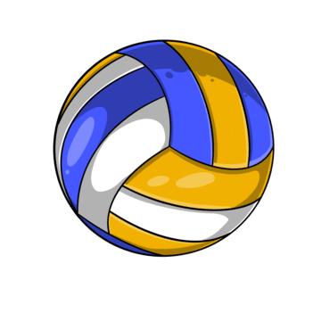
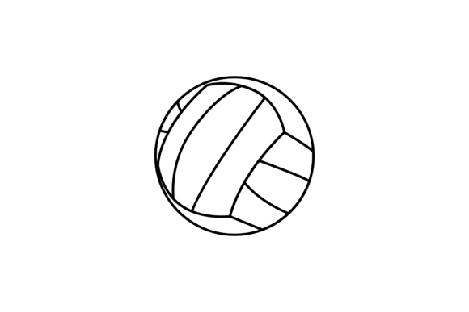

VolLeyBaL sItE
Becaue i like volleyball
And im totally not scared for the ball
AAAAAAAAAAAAAAAAAAAAAAAAAAAAAAAAAAAAAAAAAAAAAAAAAAAAAAAAAAAAAAAAAA
BBBBBBBBBBBBBBBBBBBBBBBBBBB
This text has a element style js line
Volleybal is een balsport waarbij het speelveld is verdeeld in twee gelijke helften gescheiden door een net.
Het net is tussen twee palen gespannen en bevindt zich op een bepaalde hoogte boven de grond.
Deze hoogte is 2,43 m voor heren en 2,24 m voor dames. Bij de jeugd is de nethoogte afhankelijk van de leeftijd van de spelers.
[1] De beide teams, die elk uit vier of zes spelers bestaan, bevinden zich ieder op hun eigen helft en proberen door het slaan of tikken tegen de bal deze op het tegenoverliggende deel
van het speelveld binnen de lijnen de grond te doen raken. Een geslaagde poging, of een fout van de tegenstander, levert een punt op. Wie het eerst 25 punten heeft behaald wint de set.
Wie het eerst drie sets heeft gewonnen, wint de wedstrijd. Bij een gelijke stand, 2–2 in sets, wordt een beslissende set tot 15 punten gespeeld, bij deze beslissende set wordt er van kant gewisseld bij de eerste die acht punten heeft.
Op de zijkanten van het net, precies boven de zijlijn, zijn twee verticale stokken, de zogenoemde "antennes",
geplaatst. Een bal die naar de speelhelft van de tegenstander wordt gespeeld moet tussen deze antennes of het verlengde ervan doorgaan.
In de oorspronkelijke vorm, het gewone zaalvolleybal, bestaat ieder team uit zes personen en meet het veld 9 bij 18 meter.

